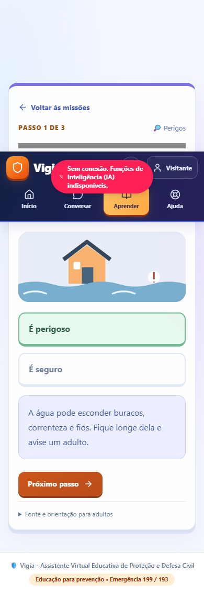

Carregamento mais leve e telas disponíveis sem esperar pela IA
15 de outubro de 2026 • Vigia 18+ • medição e regressão online concluídas • fluxos reais e três turnos de voz aprovados
O que foi ajustado
- A primeira tela carrega as dependências essenciais. Conversa, acesso à conta, perfil, conquistas e outros painéis passam a carregar quando solicitados. O módulo é reutilizado nas próximas aberturas; o perfil mantém o rascunho ao fechar e reabrir. O acesso à conta limpa suas credenciais ao reabrir, como previsto pelo próprio formulário.
- As dependências Firebase foram separadas. O grafo final confirma que o carregamento de Home, Chat e Auth não puxa o módulo Firestore como dependência estática. Operações autenticadas continuam exigindo suas verificações e conexão.
- Home e atividades de visitante continuam utilizáveis enquanto o servidor responde à verificação da IA. Em Conversa, voz e microfone mostram “Verificando conexão”; uma falha oferece “Verificar conexão”. Tentar novamente consulta o estado e não liga o microfone automaticamente.
- O PWA instala apenas o conjunto inicial de arquivos públicos. Módulos de funcionalidades são guardados quando visitados, sem disputar todo o download inicial. Páginas visitadas e uma atividade educativa abriram sem internet após nova navegação controlada pelo service worker.
- O CacheStorage contém arquivos públicos do aplicativo. APIs, dados de conta, conversas e respostas Firebase não entram nesse cache. IA, contas e Sala Segura continuam dependendo de conexão; a interface informa essas limitações.
Identidade visual, melhorias anteriores e controles de segurança foram preservados. Nenhum plano pago, faturamento ou novo fornecedor foi ativado nesta rodada.
Verificações realizadas
| Verificação | Resultado |
|---|---|
| Testes automatizados existentes | 132 testes passaram. Incluem os conjuntos de segurança/dados/aprendizado, IA e voz com fornecedores simulados, configuração de publicação e cliente de voz. |
| Grafo de dependências | 15 verificações passaram no build final, incluindo a ausência de importação estática de Firestore nos fluxos Home, Chat e Auth. |
| Regressão no navegador — build final de apresentação | 32 de 32 passaram: 16 em desktop e 16 com tela de celular emulada. JSON final. |
| Regressão no navegador — versão publicada | 32 de 32 passaram: 16 em desktop e 16 com tela de celular emulada. Conexão e bootstrap de visitante simulados explicitamente; arquivos, interface e service worker da versão online reais. JSON online. |
| Fluxos reais com Gemini e Firebase | 20 de 20 verificações passaram: 10 desktop e 10 celular emulado, com contas adultas fictícias preexistentes. Login, chat Gemini, imagem fictícia, histórico cloud, missão/XP, logout/troca de conta e mensagem na Sala Segura funcionaram. Recusa do microfone e falha de rede foram simuladas; não comprovam conversa por voz. JSON dos fluxos reais. |
| Três turnos de voz Google — versão publicada, celular emulado | 3 de 3 turnos passaram, com transcrição, respostas e voz Google reais da cota gratuita. As falas adultas de entrada são sintéticas e a captura é virtual, sem acesso ao microfone físico. Cada áudio terminou integralmente e a escuta voltou; contexto, histórico sem duplicação, captura única e limpeza passaram. JSON da prova real de voz. |
| Regressão dos controles de voz | 14 de 14 verificações locais passaram, com fornecedor e captura simulados. Nenhuma chamada de IA real foi usada para essa bateria. |
| Conexão pendente, HTTP 503 e recuperação | Home disponível; Chat mostra o estado correto; os dois controles refazem apenas a verificação. Rascunho preservado. Nenhuma captura, WebSocket, confirmação de envio ou chamada de IA. |
| Painéis carregados sob demanda | Auth, Profile e Badges abriram e reabriram sem novo download do respectivo módulo. Credenciais limpas no Auth; rascunho do perfil e conquistas preservados. |
| PWA e navegação offline | Service worker instalado, ativado e controlando nova navegação. Sem rede, reload abriu Home, a atividade visitada aceitou uma resposta e mostrou sua explicação, e Chat abriu texto com falha de conexão informada. |
| Cache público e privacidade | Nos dois tamanhos de tela, local e online: 7 arquivos no precache, 13 no cache de assets e 1 imagem pública de avatar. Nenhuma URL de API ou Firebase no CacheStorage; nenhum acesso a conta ou IA foi solicitado nessa bateria simulada de visitante. |
| Tipos e builds finais | Checagem de tipos e builds de apresentação e publicação passaram. Avisos dos módulos 3D grandes continuam separados do caminho inicial. |
| Medição anterior na versão online | 8 marcos visíveis passaram em rede normal e outros 8 com rede/CPU limitadas. Valores abaixo; são duas amostras, não uma distribuição estatística. |
| Regras Firebase e aparelhos físicos | Testes de regras Firebase não foram repetidos nesta rodada. Não houve validação em microfone físico, Android, iPhone ou Safari; a tela de celular é emulada no Chrome. |
Na prova de voz publicada, o primeiro áudio chegou 11.188, 3.039 e 6.570 ms após o início do processamento de cada turno, incluindo transcrição e geração da resposta. As 230 fontes de áudio terminaram naturalmente; os 846.720 bytes PCM foram reproduzidos uma vez e sem lacuna programada entre os trechos. Não houve interrupção espúria nem falha de síntese. A reprodução Web Audio foi real, com a saída silenciada pelo teste; isso não avalia audição humana nem eco físico. Reduzir o carregamento da interface não elimina a espera variável da IA.
A primeira bateria local também passou 32 verificações no build intermediário. Antes disso, dois erros do próprio teste foram corrigidos: reabrir Auth pela navegação após o fechamento das boas-vindas e aguardar a limpeza de credenciais feita pelo efeito de abertura. As evidências negativas foram preservadas. Essas correções não exigiram mudanças no aplicativo.
Antes: medições na versão online
Chrome novo com tela de 390 × 844. “Rede limitada” usa latência adicional de 150 ms, download de 200.000 bytes/s, upload de 93.750 bytes/s e CPU 4 vezes mais lenta. É uma simulação, não um celular físico. O teste aguarda um elemento visível e utilizável, depois observa uma janela fixa de 350 ms; não usa silêncio de rede como sinal de prontidão.
| Marco visível | Rede normal | Rede/CPU limitadas |
|---|---|---|
| Primeiro visitante: tela 18+ | 1,084 s | 2,245 s |
| Aceitar 18+ → boas-vindas | 1,398 s | 2,682 s |
| Explorar como visitante → Home | 0,020 s | 0,083 s |
| Abrir Chat pela primeira vez | 0,150 s | 0,272 s |
| Reabrir Home na mesma sessão/cache | 0,367 s | 0,848 s |
| Reabrir Chat na mesma sessão/cache | 0,049 s | 0,222 s |
| Outro Chrome novo: adulto aceito e visitante → Home | 3,126 s | 4,670 s |
| Abrir Chat nesse outro Chrome | 0,125 s | 0,291 s |
Os tempos de clique acima são medidos a partir da ação; não devem ser somados como se fossem um único carregamento. No primeiro acesso 18+, o tempo até o primeiro byte da navegação foi 629,5 ms na amostra normal e 602,9 ms na limitada. Isso inclui rede, proxy e espera do servidor. Não houve consulta prévia para aquecer o serviço; o estado anterior de suspensão é desconhecido.
Antes das mudanças, a primeira tela observou 191.231 bytes de JavaScript descompactado. Ao chegar a Home/Chat, o total observado foi 1.271.336 bytes de JavaScript descompactado. Todos os recursos da página somaram 396.092 bytes transferidos após a entrada no aplicativo, com compressão Brotli observada nas respostas online. Tráfego de precache feito fora da página pode não aparecer nessa soma.
FCP/LCP são métricas da navegação, não de cada troca de aba. Na amostra normal, o FCP ainda estava ausente no primeiro snapshot e apareceu posteriormente em 1,492 s. Na amostra limitada, FCP/LCP observados foram 2,528 s. Ausência é registrada como indisponível, nunca como zero.
Fontes dos valores: baseline normal e baseline com rede/CPU limitadas. Não houve erro HTTP/rede ou erro de página nesses dois registros.
O que a medição local permite concluir
A medição intermediária local confirmou que parte do código foi adiada para a primeira abertura de Conversa. Essa amostra não serve para afirmar uma redução do tempo online: o servidor local não usa a mesma compressão, rede, região ou latência da publicação. O build final também recebeu ajustes posteriores nessa separação de dependências.
A comparação válida desta rodada usa somente as amostras online antes/depois abaixo. Mesmos perfis, janela de observação e parâmetros de rede/CPU; ainda assim, são execuções únicas e o tempo do servidor variou. Os ganhos observados não são uma garantia para qualquer rede ou aparelho.
Registro intermediário, mantido para transparência: medição local intermediária. Ele não deve ser usado como comparação direta de velocidade com o Render.
Depois da publicação — carga menor, primeira abertura de Chat sob demanda
O pacote novo foi confirmado no endereço público: entrada /assets/index-ByO5164l.js, 1.485 bytes, com o novo bootstrap identificado. Prova pública do pacote. As duas medições online passaram seus 8 marcos cada, sem falha HTTP/rede nem erro de página, e a regressão online passou 32 de 32 verificações.
| Marco | Normal: antes → depois | Limitada: antes → depois |
|---|---|---|
| Primeira tela 18+ | 1,084 → 0,758 s | 2,245 → 2,138 s |
| Aceitar 18+ → boas-vindas | 1,398 → 0,732 s | 2,682 → 2,091 s |
| Explorar como visitante → Home | 0,020 → 0,016 s | 0,083 → 0,028 s |
| Primeira abertura de Chat | 0,150 → 0,462 s | 0,272 → 0,849 s |
| Reabrir Home na mesma sessão/cache | 0,367 → 0,199 s | 0,848 → 0,443 s |
| Reabrir Chat na mesma sessão/cache | 0,049 → 0,055 s | 0,222 → 0,177 s |
| Adulto aceito, Chrome novo → Home | 3,126 → 1,782 s | 4,670 → 3,400 s |
| Primeiro Chat nesse Chrome novo | 0,125 → 0,455 s | 0,291 → 0,921 s |
A Home recebe 609.961 bytes de JavaScript descompactado, contra 1.271.336 antes: redução observada de 52,0%. A primeira tela 18+ recebe 151.852 bytes de JavaScript, contra 191.231 antes. Após abrir Chat, o total é 689.467 bytes, ainda abaixo dos 1.271.336 anteriores. São bytes observados na página até os snapshots, não uma soma de todo o tráfego de precache do worker.
O total transferido observado até Home caiu de 396.092 para 222.551 bytes, com compressão online. Ao abrir Chat, chega a 246.847 bytes. O primeiro Chat agora espera o módulo que foi adiado: essa etapa ficou mais lenta nas amostras, em troca de reduzir a entrada no aplicativo. O segundo acesso reutiliza o módulo, sem prometer que todo clique será mais rápido.
O TTFB inicial variou de 629,5 para 205,8 ms na rede normal e de 602,9 para 581,2 ms na limitada. Parte da diferença normal decorre dessa variação de servidor/rede; não pode ser atribuída apenas ao código. Não foi medido um despertar controlado após 15 minutos de inatividade.
Fontes: depois, rede normal e depois, rede/CPU limitadas. Os parâmetros são os mesmos descritos na linha de base.
Incidente de publicação resolvido: a primeira tentativa de medição após o deploy ainda recebia o pacote anterior. Essa amostra foi preservada como “after-old-runtime” e excluída da comparação. Após limpar o cache de build e reconstruir, o pacote público novo foi conferido antes de repetir as medições. Isso não apaga a falha anterior nem a conta como ganho de desempenho.
Abra a versão conferida em Vigia. Quem já utilizou o aplicativo deve aplicar a atualização oferecida pelo PWA.
Conferir a experiência
- Abra o aplicativo. Se já o utilizou e aparecer uma atualização, escolha “Atualizar Agora”.
- Confirme o acesso 18+ e entre como visitante. Home deve permitir navegação mesmo enquanto o servidor verifica a conexão.
- Abra Conversar. Durante a verificação, aguarde o estado do servidor; a voz não deve iniciar sozinha após a recuperação.
- Visite Aprender, abra uma missão e depois Conversar. Para testar offline, primeiro é necessário que o PWA tenha sido ativado e os arquivos dessas telas estejam guardados.
- Sem rede, confira as atividades já visitadas. IA, login e Sala Segura exigem internet; o modo offline não fabrica respostas.
Home publicada offline no desktop • atividade publicada offline no celular emulado • Chat publicado offline no celular emulado • três turnos de voz Google reais



Limites do plano gratuito e da validação
O Render Free suspende o serviço após 15 minutos sem tráfego e informa que o despertar pode levar cerca de um minuto. Reduzir o JavaScript não elimina essa espera quando o servidor está adormecido. A documentação oficial foi conferida em 15/10/2026: Render — suspensão por inatividade.
Não foram contratados serviços, ativado faturamento ou utilizadas contas e informações reais de crianças. Nas baterias de 32 verificações de carregamento, os status “pendente”, “503” e “disponível” são simulações explícitas, sem IA. As 20 verificações de integração e os três turnos de voz posteriores usaram Gemini real gratuito; as contas de integração são adultas e fictícias, já existentes.
Os aparelhos físicos e o comportamento de suspensão no celular continuam sem validação nesta rodada. O teste com PWA comprova service worker registrado e controlando a navegação, sem equivaler à instalação real no sistema. Uma experiência consistentemente rápida ainda depende do dispositivo, rede, cache, servidor e cota gratuita disponível.
Referência da rodada de voz: validação anterior da voz Google.